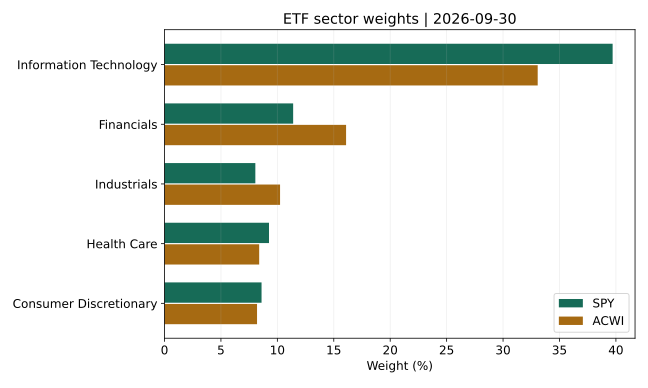
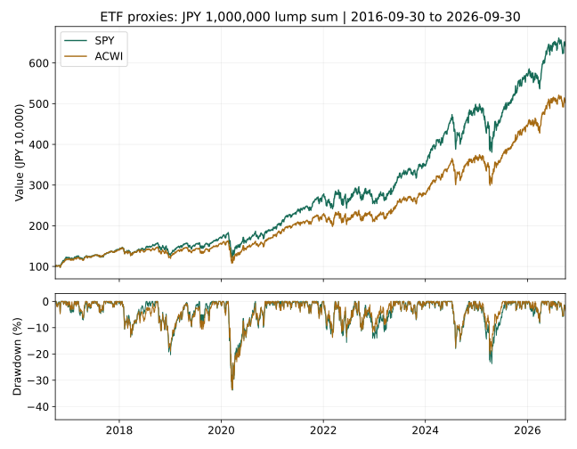
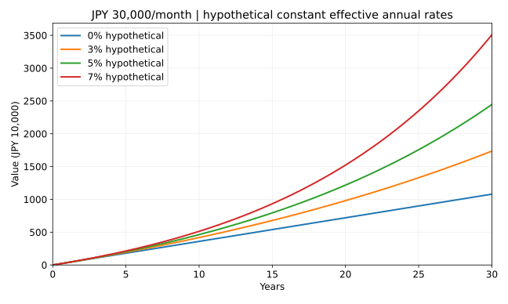

S&P500とオルカンはどっちがおすすめ？
過去のリターン・リスク・構成銘柄を徹底比較
公開： ｜ 更新：
著者・編集：トピック基地 ｜ 調査・計算日：2026年11月6日（UTC）
新NISAで積立を始めるとき、S&P500とオルカンのどちらを選ぶかは、多くの人が迷う点です。考える順序は「最近よく上がったのはどちらか」だけではありません。米国への集中をどれだけ受け入れるか、他地域も持ちたいか、費用や円高時の下落を理解できるかで、選ぶ理由は変わります。
- S&P500は米国大型株、オルカンは特定の全世界株式投信の愛称です。指数と投信は同じものではありません。
- 本記事の過去実績計算は、米国ETFのSPY・ACWIを代理として同じ期間・円換算条件で比較したものです。国内投信の実績や新NISAでの手取り額を示すものではありません。
- 全世界株にも米国株が多く含まれます。両方買うことは、米国比率を高める選択になる場合があります。
特定商品の購入を推奨する記事ではありません。過去実績も仮定の計算も、将来の利益・元本を保証しません。制度の基礎は第5号の新NISA入門を参照してください。
1. S&P500・オルカン・全世界株式は同じ種類の名前ではない
S&P500とは：米国大型株の指数
S&P500は米国の大型株の動きを表す指数です。浮動株調整後の時価総額を基に配分され、各社を均等に保有する指数ではありません。500社を対象にしていても、複数の株式クラスが採用されるため、証券数がちょうど500になるとは限りません。［1］
オルカンとは：全世界株式に投資する国内投信の愛称
「オルカン」は、eMAXIS Slim 全世界株式（オール・カントリー）の愛称です。同商品はMSCI ACWI（配当込み、円換算ベース）への連動を目指します。「全世界株式の指数一般」と同義ではなく、同じ分野の投信にも異なる商品があります。［2］
MSCI ACWIとFTSE Global All Capの違い
MSCI ACWIは先進国・新興国の大型・中型株が中心です。FTSE Global All Capは大型・中型に加えて小型株も含みます。また、国・地域の分類基準や採用基準も異なります。「全世界」という言葉だけで同じ構成だと考えないようにしましょう。本記事の全世界側の比較対象はMSCI ACWIに連動する米国ETF・ACWIで、FTSE連動商品の成績は掲載していません。［3］［4］［5］
| 観点 | S&P500側 | 全世界側 |
|---|---|---|
| 指数の対象 | 米国の主な大型株 | MSCI ACWI：先進国・新興国の大型・中型株 |
| 過去系列の代理 | SPY（米国ETF） | ACWI（米国ETF） |
| 国内投信との違い | 通貨・費用・分配方針・税・評価時刻などが異なる。国内のeMAXIS Slim等の成績そのものではない | |
2. 米国株の比率と投資対象国を比べる
S&P500の投資対象は米国株です。一方、MSCI ACWIの国別米国比率は64.63%（2026年10月30日の指数資料）でした。全世界株を選んでも、米国を避ける投資にはなりません。この「国」は指数の分類であり、各企業の売上がどの国から生まれるかを示す比率でもありません。［1］［3］
MSCI ACWIは同日時点で先進国23、新興国24の国・地域を対象とし、日本・英国・カナダなどに加え、台湾・インドなども含みます。FTSEとは国の分類が異なることがあり、小型株を含めるかも別の判断です。国数が多ければ短期に下がらないという意味ではありません。
国比率は指数の2026年10月30日資料、次のETF保有銘柄・業種と実績の終点は2026年9月30日です。国の対象範囲を説明するための別時点の資料であり、同一ポートフォリオの比率を合算してはいません。指数の米国株比率をETFの現金込みの国別残高と同一視しないでください。
3. 上位10銘柄と業種：全世界でも大型テックを共有する
両ETFの同じ2026年9月30日の公式ファクトシートを比べると、上位にはNVIDIA、Apple、Microsoftなどが重なっています。株式クラスの異なるAlphabet A/Cは別証券として数えました。「上位10証券」と「10企業」は必ずしも一致しません。［6］［7］
| 順位 | SPY 銘柄 | 比率 | ACWI 銘柄 | 比率 |
|---|---|---|---|---|
| 1 | NVIDIA | 8.38% | NVIDIA | 5.09% |
| 2 | APPLE | 7.37% | APPLE | 4.74% |
| 3 | MICROSOFT | 5.77% | MICROSOFT | 3.51% |
| 4 | AMAZON.COM | 3.71% | AMAZON.COM | 2.34% |
| 5 | ALPHABET A | 3.06% | ALPHABET A | 1.96% |
| 6 | BROADCOM | 2.53% | TAIWAN SEMICONDUCTOR | 1.86% |
| 7 | ALPHABET C | 2.46% | META PLATFORMS A | 1.54% |
| 8 | META PLATFORMS A | 2.42% | ALPHABET C | 1.54% |
| 9 | MICRON TECHNOLOGY | 1.82% | BROADCOM | 1.54% |
| 10 | TESLA | 1.52% | MICRON TECHNOLOGY | 1.17% |
| 業種 | SPY | ACWI |
|---|---|---|
| 情報技術 | 39.71% | 33.07% |
| 金融 | 11.40% | 16.09% |
| コミュニケーション | 9.95% | 7.97% |
| ヘルスケア | 9.26% | 8.39% |
| 一般消費財 | 8.60% | 8.20% |
| 資本財・サービス | 8.05% | 10.24% |
| 生活必需品 | 4.37% | 4.50% |
| エネルギー | 3.40% | 3.94% |
| 公益 | 1.88% | 2.23% |
| 不動産 | 1.70% | 個別内訳なし |
| 素材 | 1.70% | 3.50% |
| その他（内訳未確認） | 個別内訳なし | 1.86% |
公表値を足した上位10証券の比率はSPYが39.04%、ACWIが25.29%です。大型銘柄の影響はSPYの方が強い一方、全世界側にも共通する企業の影響が残ります。ACWIに含まれる台湾半導体など、米国外の大型株にも目を向けると、地域の違いが見えてきます。
業種では両者とも情報技術の比率が大きいものの、金融や資本財の配分は異なります。ACWI資料の「Other 1.86%」は内訳を確認できないため、不動産へ機械的に割り当てていません。表の欠けた内訳をゼロと読むことも避けてください。丸めにより合計が100%に一致しないことがあります。

4. 過去5年・10年：リターン、100万円、最大下落率
2026年11月6日に取得した日次データから、公式月次資料の共通終点である2026年9月30日までを分析しました。10年窓は2016年9月30日から、5年窓は2021年9月30日からです。調査日の直前営業日までの最新実績ではありません。両ETFと為替の値がある日だけを使い、欠測日は前日の値で埋めていません。
実績の計算系列はYahoo Financeの配当・分割調整後終値、為替はFRBのH.10（1米ドル当たり円）です。国内投信の基準価額、公式指数の配当込み系列、ETFのNAVとは区別します。ETF内部の費用は価格形成に含まれるので重ねて控除せず、投資家段階の税・手数料・為替スプレッドは引いていません。［8］［9］
次の表のCAGRは始点と終点を一定年率に換算した値、最大DDは期間内の日次観測値の過去最高値から最も下がった率です。価格変動の指標は月次収益率の標本標準偏差を年率換算したもので、最大損失の上限や、上下する確率を保証する値ではありません。
| ETF代理系列 | CAGR USD | CAGR JPY | 100万円期末 JPY | 最大DD JPY | 月次変動率の年率換算 JPY |
|---|---|---|---|---|---|
| SPY（S&P500連動ETF） | +13.70% | +21.79% | 2,679,654円 | -23.70% | 16.34% |
| ACWI（全世界株式ETF） | +11.63% | +19.58% | 2,444,532円 | -20.02% | 14.49% |
| ETF代理系列 | CAGR USD | CAGR JPY | 100万円期末 JPY | 最大DD JPY | 月次変動率の年率換算 JPY |
|---|---|---|---|---|---|
| SPY（S&P500連動ETF） | +15.24% | +20.43% | 6,414,593円 | -33.74% | 16.75% |
| ACWI（全世界株式ETF） | +12.45% | +17.52% | 5,023,304円 | -33.72% | 15.30% |
公式資料との照合
| ETF | 期間 | 公式Market Value/Price | 独自の調整後終値計算 | 差（ポイント） |
|---|---|---|---|---|
| SPY | 5年 | 13.66% | 13.70% | +0.040 |
| ACWI | 5年 | 11.64% | 11.63% | -0.010 |
| SPY | 10年 | 15.18% | 15.24% | +0.056 |
| ACWI | 10年 | 12.45% | 12.45% | +0.002 |
年別騰落率と部分期間
| 年 | 開始日 | 終了日 | SPY | ACWI |
|---|---|---|---|---|
| 2016（部分） | 2016-09-30 | 2016-12-30 | +19.94% | +16.59% |
| 2017 | 2016-12-30 | 2017-12-29 | +17.44% | +19.98% |
| 2018 | 2017-12-29 | 2018-12-31 | -7.10% | -11.54% |
| 2019 | 2018-12-31 | 2019-12-31 | +29.99% | +25.40% |
| 2020 | 2019-12-31 | 2020-12-31 | +12.36% | +10.47% |
| 2021 | 2020-12-31 | 2021-12-30 | +44.04% | +32.65% |
| 2022 | 2021-12-30 | 2022-12-30 | -6.59% | -6.74% |
| 2023 | 2022-12-30 | 2023-12-29 | +34.90% | +30.73% |
| 2024 | 2023-12-29 | 2024-12-31 | +39.46% | +31.16% |
| 2025 | 2024-12-31 | 2025-12-31 | +17.29% | +21.97% |
| 2026（部分） | 2025-12-31 | 2026-09-30 | +13.03% | +13.27% |
過去系列による月3万円の積立比較
| 代理ETF | 積立元本 | 期末評価額 | 差額 |
|---|---|---|---|
| SPY | 3,600,000円 | 10,734,819円 | +7,134,819円 |
| ACWI | 3,600,000円 | 9,399,047円 | +5,799,047円 |
月3万円を10・20・30年：利回りを仮定した比較
| 期間 | 仮定実効年率 | 元本 | 想定評価額 | 増減額 |
|---|---|---|---|---|
| 10年 | 0% | 3,600,000円 | 3,600,000円 | +0円 |
| 10年 | 3% | 3,600,000円 | 4,183,440円 | +583,440円 |
| 10年 | 5% | 3,600,000円 | 4,630,895円 | +1,030,895円 |
| 10年 | 7% | 3,600,000円 | 5,131,552円 | +1,531,552円 |
| 20年 | 0% | 7,200,000円 | 7,200,000円 | +0円 |
| 20年 | 3% | 7,200,000円 | 9,805,633円 | +2,605,633円 |
| 20年 | 5% | 7,200,000円 | 12,174,135円 | +4,974,135円 |
| 20年 | 7% | 7,200,000円 | 15,226,091円 | +8,026,091円 |
| 30年 | 0% | 10,800,000円 | 10,800,000円 | +0円 |
| 30年 | 3% | 10,800,000円 | 17,361,391円 | +6,561,391円 |
| 30年 | 5% | 10,800,000円 | 24,461,277円 | +13,661,277円 |
| 30年 | 7% | 10,800,000円 | 35,083,578円 | +24,283,578円 |
今回の10年窓では、100万円の円換算期末額はSPYが約641万円、ACWIが約502万円で、米国側の伸びが大きい結果でした。一方、最大下落率は両者とも約33.7%。5年窓ではSPYの最大下落率が23.70%、ACWIが20.02%となり、期間を変えるとリスクの比較も変わります。過去の成績差から、将来も同じ順序になるとは判断できません。
年別表の2016年は9月30日以降、2026年は前年末から9月30日までの部分期間です。全暦年の成績と取り違えないようにしてください。月次変動率は5年で60個、10年で120個の月次収益率を使い、年率CAGRや日次DDと異なる方法で算出しています。

月3万円を20年積み立てると、どちらが上になる？
上の過去データによる積立は10年間の検証です。ACWIの設定は2008年なので、2026年時点では同ETFで共通した20年間の実績を取得できません。別指数や短い実績を継ぎ足して20年の実績を作ってはいません。20年・30年については、両者に共通の仮定利回りを置いた比較表を使います。
月3万円を20年積み立てた元本は720万円。仮定実効年率5%では12,174,135円です。ただし、どちらの指数がその利回りを実現するかを示した数字ではありません。同じ利回りなら同じ計算結果であり、過去のCAGRを20年先へ延長して優劣を断定することはできません。

過去10年の積立計算は、調整後系列を単価とする仮想的な小口保有を月末に買い増す近似です。実際のETFで端株購入・再投資が同条件でできるとは限らず、配当の支払日や税金も再現していません。投資元本の入金を含む残高の線を、そのまま運用利回りとして読むこともできません。
5. S&P500とオルカンを両方買う意味はある？
両方を持つと、全世界株に含まれる米国株に、さらに米国大型株を追加することになります。例えばMSCI ACWIの米国比率を64.63%、S&P500の対象を米国株100%として半分ずつ配分すると、単純な指数配分モデルの米国比率は82.315%（約82.3%）です。これは現在の国内投信を実測した比率ではなく、2026年10月30日の指数情報による説明用の計算です。
米国の比重を自分で高めたい意図があるなら、併用に意味を持たせられます。一方、「商品が2本ならリスクが半分」と考えるのは適切ではありません。上位企業の重複、株式という共通のリスク、下落時に両方が下がる可能性を確認しましょう。配分を維持するための見直しや売買にも手間がかかります。
6. 円高・円安で円建ての成績はどう変わる？
為替ヘッジなしの外国株式投信では、円高は円換算の価値を押し下げ、円安は押し上げる要因になります。円で投信を買っていても、外国資産への投資から生じる為替リスクは残ります。
説明用にドル建ての資産が10%上昇し、同時に1ドル当たりの円が10%下落した場合、円換算は1.10×0.90−1＝−1%です。足し算で相殺されるとは限りません。これは為替換算だけの算数例で、市場予測ではありません。
本記事のACWIは世界各国の資産を米ドル建てETFとして表したものです。米ドル建て価格を円へ換算していても、投資先が米国だけになるわけではありません。また、FRBの為替値とETF終値は同じ日の異なる時刻なので、同時に約定できる価格の組ではありません。
7. 信託報酬だけでなく、総費用と商品の違いを見る
| 商品 | 公表年率 | 注意 |
|---|---|---|
| SPY | Gross Expense Ratio 0.0945% | 米国ETFの経費率 |
| ACWI | Expense Ratio 0.32% | 米国ETFの経費率。国内オルカンの信託報酬ではない |
この費用差を、国内のS&P500投信とオルカンの費用差に読み替えることはできません。国内商品を選ぶときには、その商品の最新の交付目論見書と運用報告書で、信託報酬・総経費率・その他費用を比べてください。国内2商品の調査時点の最新費用を本分析では同条件で検証していないため、数値を推測して掲載していません。
購入時手数料、換金時の信託財産留保額、ETFの売買手数料・売買スプレッド、為替交換費用なども商品や販売会社で異なります。投信の基準価額には継続費用が反映されるため、実績から同じ信託報酬を再び差し引くと二重控除になります。NISAで利益が非課税になっても、費用がすべてなくなるわけではありません。［11］
8. 新NISAで選ぶときの注意点
指数そのものをNISAで購入することはできず、対象となる投信・ETFなどを購入します。つみたて投資枠か成長投資枠か、販売会社で取扱いがあるかを商品ごとに確認してください。分析用の米国ETFが、国内のつみたて投資枠でそのまま買えるという意味ではありません。
成人の年間枠はつみたて120万円・成長240万円、取得価額ベースの総枠は1,800万円（うち成長投資枠1,200万円）です。本記事の月3万円・30年の元本1,080万円は、他の買付がなければ総枠内ですが、既存利用分がある場合は残枠の確認が必要です。売却後の枠再利用は原則翌年以降で、損失の損益通算・繰越控除もできません。［12］［13］
外国での源泉税やファンド内部の課税は、NISAでも残る場合があります。分配金を受け取りNISAで買い直す場合の新たな枠消費と、ファンド内部の再投資も区別しましょう。制度と開始手順は第5号「新NISAは何がすごい？」で詳しく説明しています。2027年からの未成年者向け拡張は成人と条件が異なるため、本記事の成人枠を適用しないでください。
9. どんな投資方針に合うかを考える
- 米国大型株への集中を明確に選びたい：S&P500の対象と集中リスクを理解し、米国が他地域に劣後する期間も想定する必要があります。
- 米国以外も持ち、将来の地域配分を時価総額に委ねたい：全世界株式の考え方が候補になります。ただし米国比率や大型株への集中が小さくなるとは限りません。
- 近い将来の支出に使う資金：どちらを選ぶかより、株式へ投じること自体が目的と合うかを先に確認します。
毎月1万〜5万円の範囲でも、適切な金額は家計と使う時期によって変わります。生活費・予備資金を別に確保し、無理なく続けられる額を決めましょう。長く持つことはリスク管理の一要素ですが、元本割れが消える保証ではありません。
株式以外との違いを整理したい場合は、第4号のビットコインと株式投資の比較も参照してください。資産の仕組み・配当・税制の異なるものを、過去の上昇率だけで選ばないための補足です。
10. よくある質問
- Q. 結局、どちらがおすすめですか？
- 誰にでも有利な一方を断定できません。米国への集中を選ぶか、他地域にも配分するかという方針、リスク許容度、購入商品の費用を基に判断するための比較記事です。
- Q. 過去に勝った方を選べば、20年後も有利ですか？
- 過去の特定期間の勝敗から将来は決まりません。地域・企業・為替の環境が変わり、好調だった資産が長期に劣後することもあり得ます。
- Q. オルカンなら暴落しませんか？
- 世界分散でも株式市場全体の下落は受けます。最大DDの表は過去の観測期間内の値で、将来の損失の上限ではありません。2008年の金融危機は今回の10年窓に含まれません。
- Q. 両方を半分ずつ買うと、米国と世界を半分ずつ持てますか？
- 全世界側にも米国が含まれます。例示した指数比率では米国への配分が約82.3%になるので、名称の数ではなく中身の重なりを見ましょう。
- Q. この表はeMAXIS Slimの運用実績ですか？
- 違います。過去系列は米国ETFの調整後終値を使った比較用の近似で、国内投信の手数料・分配方針・税・評価時刻とは異なります。
- Q. 月3万円の年率7%は現実的な予測ですか？
- 予測や保証として設定した数字ではありません。一定の仮定を変えたときの差を見るために0・3・5・7%を置いています。実際にはマイナスの年や最終的な元本割れもあります。
- Q. 円高なら積立を止めるべきですか？
- 為替だけで一律には決められません。資金を使う時期・家計・資産配分が変わったかを点検し、短期予測を当てる前提で無理な売買や借入をしないことが大切です。
- Q. 公式リターンと独自計算が少し違うのはなぜですか？
- 公式資料の価格定義と調整後終値は同一ではありません。照合表で差を開示し、公式公表値と独自系列を分けています。差の全額を特定要因で説明できたとはしていません。
11. 計算条件・再現用データと限界
- 共通期間・通貨：5年と10年で共通終点。米ドル建て調整後終値×同日のFRB円/ドルで円換算。両ETFと為替がそろう日だけを採用し、欠測を埋めない。
- CAGR：（終値÷初値）365.2425/暦日数−1。年間騰落率は前年の最終共通観測日から当年の最終共通観測日へ計算。両端年は部分期間。
- 最大DD：各日について「現在値÷それまでの最高値−1」を求め、期間内の最小値を採用。日中の最安値ではない。データのない日・時間の下落は捉えない。
- 価格変動：各月の最後の共通観測日の収益率を使い、標本標準偏差（分母n−1）×√12で年率換算。日次DDと観測頻度が異なる。
- 100万円：初日に一括、追加入金・引出しなし。ドルへ交換して保有した場合の計算上の近似で、取引コストや税はゼロとする。
- 過去積立：最初の評価基準日後の2016年10月末から2026年9月末まで月3万円を120回。共通月末の円換算調整後単価で端数保有可能と仮定。
- 仮定積立：初期0、毎月末3万円、内部で複利運用。実効月率m＝(1＋年率)1/12−1、最終額＝P×｛(1＋m)月数−1｝÷m。0%は元本と同額。
- 仮定利回りの扱い：円建て名目・継続費用控除後を仮定し、別途購入時費用等ゼロ。適格なNISA利用で投資家の日本での税を引かない。外国税の免除を意味せず、物価・相場変動・分配金の外部再買付はモデル化しない。
- 検算：取得時の生応答とCSVを照合し、配当による日々の調整係数と分割イベントを確認。別実装のDecimal計算でCAGR・DD・変動率・年次値・積立を照合する。計算丸めは最終表示時だけ。
指数そのものの日次配当込み系列は取得していないため、ETF代理系列である限界があります。また、観測期間の良さを選んで将来の利回りを示すものではありません。公式リターンとの差、国比率資料との基準日の違い、国内投信との商品差を含めて読んでください。
再現資料：取得値CSV、取得日時・URL・ハッシュ、公式資料からの構成・費用・照合値、計算結果JSON、仮定12条件CSV、再現手順、計算コード、独立検算コード。
12. まとめ：どちらが上がるかより、何を持ちたいか
S&P500と全世界株式の違いは、米国の大型株へ集中するか、他地域も含めた配分を持つかです。全世界にも米国株と大型企業の比重があり、両方を買っても中身が大きく重なります。過去リターンだけでなく、構成・費用・為替・下落への耐え方をセットで考えましょう。
今回の独自計算は、同じ条件で過去を比較するための材料です。月3万円を20年・30年続けた仮定額は、どちらの将来実績の約束でもありません。新NISAの枠を埋めることより、使う目的と時期に合った資金を無理なく運用することを優先してください。
参考資料・出典
取得・調査日：2026年11月6日（UTC）。ETF実績・構成の共通基準日は2026年9月30日、指数の国・対象範囲は2026年10月30日資料。URLと取得時刻・応答ハッシュをデータに記録。過去系列の取得元と指数・ETF発行会社の一次資料を区別しています。
- S&P Dow Jones Indices：S&P 500 — 指数の投資対象・構築方針。
- 三菱UFJアセットマネジメント：オルカンと除く日本型の違い — 正式商品名・愛称・対象指数。
- MSCI ACWI Index公式ファクトシート（PDF） — 2026年10月30日の投資対象・国構成。ここでの指数実績はETF実績表へ混在させていない。
- FTSE Global All Cap公式ファクトシート（PDF） — 2026年10月30日、対象規模の確認。
- iShares MSCI ACWI ETF公式ページ — 商品の対象、設定日、公表実績と費用。
- SPY公式ファクトシート（PDF） — 2026年9月30日、上位10証券・業種・費用・公表実績。
- ACWI公式ファクトシート（PDF） — 2026年9月30日、上位10証券・業種・費用・公表実績。
- Yahoo Finance Chart APIの取得URL・取得日時 — SPY・ACWIの日次終値・調整後終値・配当・分割イベント。指数提供会社の公式日次系列ではない。
- Federal Reserve：H.10 Historical Rates, Japanese Yen — 1米ドル当たり円。ETFの評価時刻とは異なる。
- SPY公式ページ — Market Valueの価格定義、指数・費用・商品概要。
- 資産運用業協会：投資信託のコスト — 信託報酬・売買費用等。
- 金融庁：NISAを知る — 成人の利用枠と今後の制度拡張。詳細は同庁FAQも参照。
- 国税庁：No.1535 NISA制度 — 利益の非課税・損失の扱い。